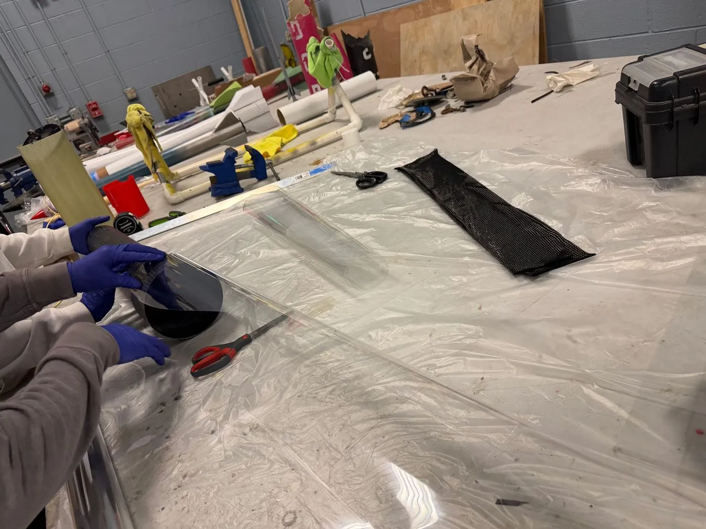
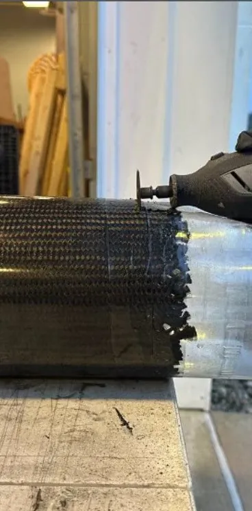

Student team · Structures & Composites · Sep 2025 to present
Composite airframe structures at Nittany Rocket Labs
Nittany Rocket Labs is Penn State's student rocketry team. In the Structures Department we design and build the airframe in carbon fiber. My part is the work before layup: manufacturable CAD, fit prototypes, and the stiffness and buckling checks that tell us whether a part will hold.
- Status
- Ongoing since September 2025
- My part
- Manufacturable CAD and fit prototypes, stiffness and buckling checks, and simple FE models compared with hand calculations.
- Team
- Structures team. The layup and build work is shared.
- Tools
- SolidWorks · ANSYS Discovery · Composite layup · GD&T
Where it stands · since September 2025
This page shows the process I work in and the checks I run before any carbon is cut. It does not publish test numbers yet.
- CAD
Manufacturable models of airframe parts, with fasteners and GD&T
- Fit
3D-printed and laser-cut prototypes for fit and clearance before layup
- FEA
Panel and beam models compared with hand calculations before I trust them
- Record
Design changes, test procedures and results written down so they can be repeated
Not shown here yet: stiffness and buckling results, and pictures of my own CAD and prototypes. They are listed under what I cannot show yet.
01The brief
Four constraints that pull against each other
The Structures Department designs and builds the rocket's airframe: carbon fiber body tubes, composite fin plates, bulkheads, tail structures and motor tube assemblies, all with tools students can get access to.
- Hold togetherStructural integrity under flight loads.
- Stay lightEvery gram in the airframe is a gram the motor has to lift.
- Be buildableManufacturable with tools students can get access to.
- Fit the calendarLimited materials and limited schedule windows.
Select a part in the drawing, or a button, to see what it is and how we build it.
02My part
Three checks before any carbon is cut
A composite part that does not fit is expensive scrap, and ANSYS Discovery returns an answer in seconds whether or not the setup behind it is right. So I check fit in cheap material, and I check the simulation against hand calculations.
When do we find out a part does not fit? Options
At layup
- A part that does not fit is expensive scrap.
- Wall thickness, slot and tab alignment, bolt-hole tolerances and assembly clearance all have to be right first time.
In a prototype My approach
- A mistake costs minutes, not a layup.
- Fit is settled before any carbon is cut.
- Adds a prototype step before layup.
What I do: I model parts in SolidWorks for manufacturability, 3D print or laser cut prototypes to check fit and clearance, and add fasteners and GD&T so the part can be built and assembled.
Hand checks before I trust the FEA
I run stiffness and buckling checks against deflection limits, build simple panel and beam FE models, and compare them with hand calculations. If a simple model agrees with a hand calculation, I have a reason to believe the complicated one. I record the changes, procedures and results so the work can be repeated and can feed future SOPs.
Cantilever tip deflection
δ = PL3 / 3EI
Bending stress
σ = Mc / I
Euler buckling load
Pcr = π2EI / (KL)2
03The team's process
From mandrel to inspected part
This is how the team makes a tube or a plate. My work sits before the first step, in CAD and fit prototypes, and in the checks that decide whether a design is ready.
Mandrel prep
The mandrel is the form a tube is built on. It gets prepared first so the cured part will come off it cleanly. Before anyone touches materials, the team goes through EHS safety training.
Layup and vacuum bag
Carbon fiber and epoxy go onto the mandrel or the flat tool, then the part is sealed in a vacuum bag that presses the layers together while the epoxy sets.
Cure
The epoxy hardens on its own schedule. This is the step that sets the pace of everything else, which is why other work gets planned around it.
Demold, trim and finish
The part comes off the tooling, gets trimmed to size and finished. We run this in parallel with other fabrication, for example demolding tubes while plates are being made.
Inspect
Each part is checked for surface defects, dimensional consistency and fit with the parts it mates to.
04Problems we hit
Five problems, and who handled what
| Problem | Who | What was done |
|---|---|---|
| No epoxy, no build. There were stretches with no epoxy or mandrels. | Team | Moved that time into future tooling, rocket stands and research on inspection methods. No build was rushed to make up the time. |
| Short schedule windows. A cure cannot be hurried. | Team | Ran tasks in parallel, for example demolding tubes while flat plates were being fabricated, so waiting turned into build time. |
| Will it fit before it is carbon? | Me | SolidWorks models for manufacturability, 3D-printed or laser-cut fit prototypes, and fasteners and GD&T added before layup. |
| Trusting the simulation. The software answers whether or not the setup is right. | Me | Stiffness and buckling checks against deflection limits, and simple panel and beam FE models compared with hand calculations. Changes and results are documented so the procedure repeats. |
| Is this part good? A composite part can look right and still hide a flaw. | Me, for the team's decisions | Researched nondestructive evaluation methods for composites, ran a cost and capability trade study for a new curing oven, and evaluated reinforcement for the tail cone. These are inputs to the team's decisions, not outcomes. |
05From the lab
A layup, and a tube coming off its mandrel


Both photos are from my end-of-semester structures review.
06Results and limits
What I cannot show yet
| Item | State today |
|---|---|
| Stiffness and buckling results | The checks are part of my process. This page does not publish numbers from them. |
| Agreement between the FE models and hand calculations | I run the comparison. This page does not quote the result. |
| Pictures of my CAD and fit prototypes | Not included yet. |
| Outcome of the oven trade study and the tail-cone evaluation | Inputs to the team's decisions. The decisions are the team's. |
07What I took from it
Four lessons, from my own end-of-semester review
- Discipline first is faster later.Early investment in safety and process discipline enabled faster iteration afterwards.
- The shop floor has a vote.Manufacturing reality consistently informed our design decisions.
- Materials set the schedule.Material availability and tooling constraints strongly influenced scheduling and workflow.
- Structure never stands alone.Structural design interacts with cost, inspection and integration.